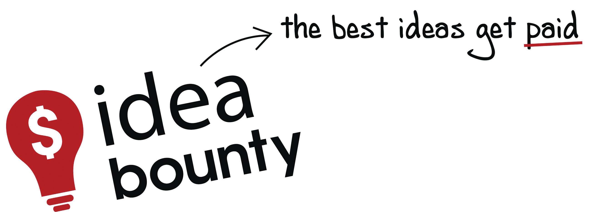

FirstRand Bank Limited is one of South Africa’s largest listed companies. It features on the Johannesburg Stock Exchange’s Top 100 index, with First National Bank (FNB) as its retail and commercial banking brand. FNB employs twenty-five thousand people in South Africa and serves over six million customers.
Figure 8.6

Source: Used by permission from First National Bank.
The nature of banking in South Africa is rapidly changing, though, and FNB is striving to remain at the forefront of social developments with progressive marketing and advertising strategies. One of the early adopters of holistic eMarketing in the finance sector, FNB is a proponent of social media as a way to reach its consumers and engage with them. FNB uses Facebook as a way to communicate with its community of clients and fans, and it maintains pages that promote FNB-sponsored events such as the FNB Whiskey Live Festival. These groups inform consumers about promotions, events, and happenings within the financial-services industry, allowing two-way communication and a high level of consumer engagement.
In October 2008, a segment of FNB, FNB Premier Banking, took its commitment to social media one step further: the bank committed itself to a rapidly growing social media tactic known as crowdsourcing through the newly launched social think tank Idea Bounty (http://www.ideabounty.com). In contrast to the traditional agency model in which creative output is paid for in accordance with the amount of resources assigned to the project, Idea Bounty opens up advertising briefs to the global community, allowing anyone, anywhere, to come up with the most creative solution. Brands then pay for the idea that they like the best, though if no idea is up to scratch, they don’t pay at all.
Figure 8.7
Source: Used by permission from Idea Bounty.
In the case of FNB, a $2,500 bounty was offered for the best idea to promote the use of online banking to its Premier Banking clients. The campaign was promoted through a number of on- and offline channels, with a heavy emphasis on social media. This holistic approach meant that FNB promoted its involvement through discussions on its fan page and through channels such as Twitter, with the support of the Idea Bounty team, who used their blog, Facebook, and Twitter to drive conversation around this creative strategy.
While FNB’s involvement in this project was brave, it was also very enlightened. The response was phenomenal. While the FNB brief was live, over eight hundred creative individuals registered on the Idea Bounty site. Out of these, 130 ideas were submitted in response to the brief. During the campaign, the site was visited over seven thousand times, and the online community was kept very busy, talking about FNB, proving that word of mouth spreads fast and social media engagement is contagious and has the potential to amass great creativity.
In the case of FNB, crowdsourcing, supported by social media, resulted in substantial PR value and an excess of ideas from which to choose, as well as the successful integration of consumers into the company. The use of Idea Bounty allowed for the growth of brand awareness and close relationships with a large prospective client base.
For more information, visit First National Bank (http://www.fnb.co.za) and Idea Bounty (http://www.ideabounty.com).